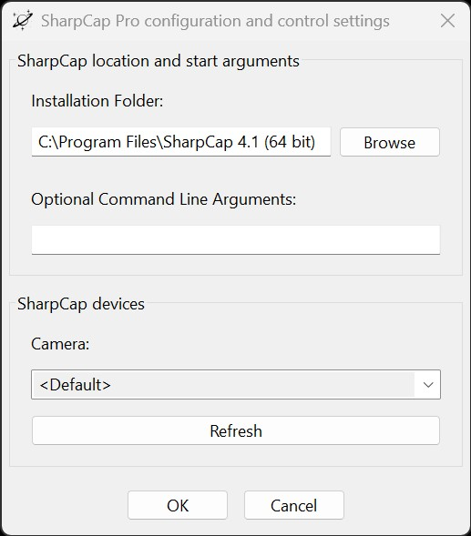

This section explains how to configure SharpCap Pro in HelioMaker, particularly during the initial HelioMaker setup. Note that this document does not cover SharpCap Pro's own settings and tools, which are detailed in the SharpCap Pro documentation available at SharpCap.co.uk. However, other sections of this help tutorial may include examples or references to specific SharpCap settings, which will be clearly identified.
The SharpCap Pro Configuration step ensures seamless integration between HelioMaker and SharpCap Pro. While required during the initial setup, this step can be revisited as needed.

Note: While HelioMaker is connected to SharpCap, the fields for selecting the SharpCap executable path and its optional command line arguments are disabled to prevent changes during an active connection. To modify these settings, exit the SharpCap Configuration dialog, disconnect from SharpCap using the Link button, and then reopen the SharpCap Configuration dialog.
C:\Program Files\SharpCap 4.1 (64 bit).C:\Program Files (x86)\SharpCap 4.1.You can enter any custom command-line arguments to use when launching SharpCap. In most cases, this field can be left empty. If you wish to customize launch behavior, refer to the SharpCap documentation for details: SharpCap Command Line Arguments.
Select the camera to be automatically opened and used by SharpCap Pro when it is launched from HelioMaker via the corresponding Link button. To configure this entry correctly, follow these steps:
HelioMaker is designed to simplify your workflow by automating the launch of SharpCap and connecting to your preferred camera. Proper configuration ensures an efficient and seamless experience. If you prefer not to use this feature, leave the camera selection set to default.
HelioMaker must control the launch of SharpCap to enable proper communication. If SharpCap is already running, HelioMaker will suggest closing it before reopening it automatically.